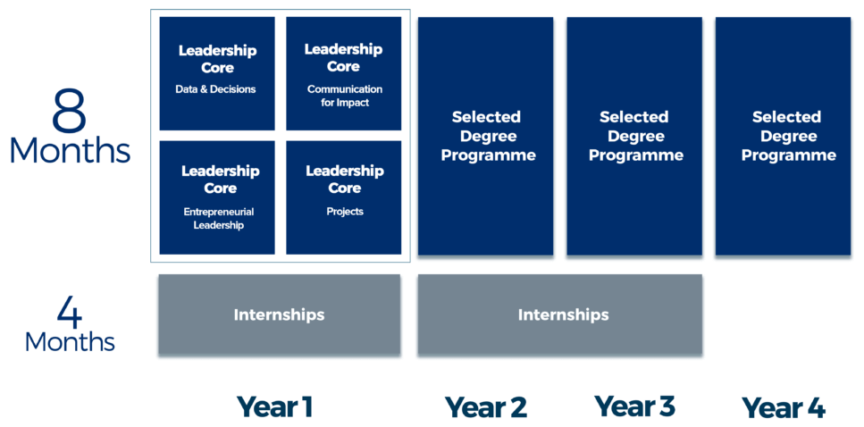

Timeline
Your Journey
The ALU Undergraduate Programme is designed with your future in mind. We believe in preparing our students for the world of tomorrow filled with new ideas, big challenges and jobs that haven’t even been created yet. With that in mind, we have crafted a learning experience that allows you to continually apply the skills you learn, both in and out of the classroom and in everything you do.

In Year 1, you will participate in our Leadership Core modules intended to unlock your curiosity and challenge your approach to learning. From Year 2 onwards, you will enter a more specialized degree programme of your choice. In order to get the real world experience that is crucial to learning at ALU, you will spend 4 months in annual internships with our Employer Partners.
Please note that all modules are delivered and assessed in English.
Leadership Core
Year 1: Develop your skills
ALU’s Learning Model is governed by the 7 Meta Skills we have identified as necessary skills for any graduate to be highly effective in the real world. Within these 7 Meta Skills are Core Skills that make up the tangible skillsets we apply on a daily basis from writing to quantitative reasoning, research and more. Our Leadership Core is the platform targeted at helping you develop these skills.
The Leadership Core is made up of four courses:
DATA & DECISIONS
Learn how to understand data and its implications in the real world.
COMMUNICATING FOR IMPACT
Develop the necessary skills to communicate in a professional setting.
ENTERPRENEURIAL LEADERSHIP
Discover the soft skills need to make a great leader.
PROJECTS
Enagage in real life work similar to working in an actual organisation.
Degree Programmes
Year 2 onwards: Develop your passion
ALU offers a variety of bachelor degree programmes designed to address the gap between education and the real world by developing a curriculum that addresses the industry needs of our continent. We challenge you to declare a “mission” for your life, not just an academic “major”. ALU will expose you to the grand challenges and opportunities of our time, and work with you to define how you want to solve these problems and capture emerging opportunities.
All our degree programmes have been crafted by curating some of the best content from across the world delivered through our innovative Learning Model.
In addition to your degree programme, your learning will be supplemented by an African Studies course that puts your learning in the African and global context- working towards the mission for your life.
Click here to learn about the Computing course in ALU.
Internships
12 months of work experience
Work experience is so crucial we’ve made it part of our curriculum.
As young leaders who will carve new career paths to solve African challenges, our students recognize that the most rewarding internship for them may not necessarily be a large organisation or with a big brand name. In fact, in finding a professional environment that will transform and put their leadership skills to the test, may be with an NGO, a growing SME, an academic research internship or even working on their entrepreneurship venture where they can gain valuable exposure to the evolving world of work.
Selling government bonds through mobile money in Ghana. Launching social media campaigns for L’Oreal in their Paris office. Coordinating healthcare research agents in Lesotho. Researching the breadth of the Private Equity industry in Africa from Swaziland.
Our students don’t wait until graduation to achieve great things. Through the internship programme, they get a head start on learning about being excellent professionals and making an impact in the workforce in Africa and beyond.
While we provide access to a network of employers, our students take ownership in the process of securing an internship that best helps them grow as young leaders.